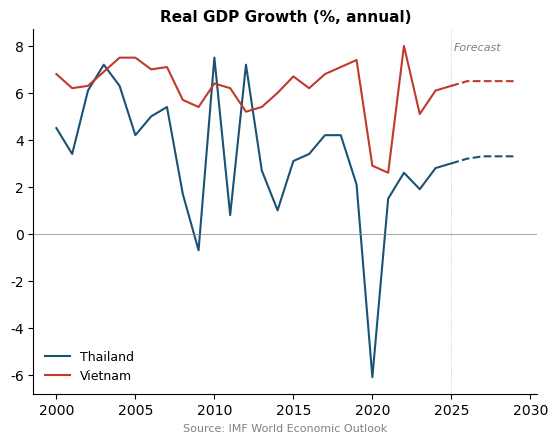
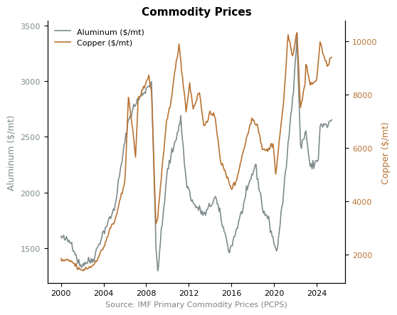
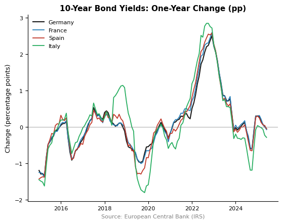

IMF API with Python: Practical Examples
Parts 1 and 2 covered the basics of retrieving data and discovering datasets. Here we apply both—combining the discovery tools from Part 2 with practical workflows—to work through three examples: economic forecasts, commodity prices, and data from providers beyond the IMF.
Economic Forecasts (WEO)
The World Economic Outlook (WEO) dataset contains IMF projections for over 40 indicators—GDP, inflation, unemployment, government debt, current account, and more—covering nearly every country. Data includes historical values and forecasts several years forward.
In[1]:
import sdmx
import pandas as pd
import matplotlib.pyplot as plt
import logging
logging.getLogger('sdmx').setLevel(logging.ERROR)
IMF_DATA = sdmx.Client('IMF_DATA')
We can use the discovery methods from Part 2 to explore the WEO dataset and find the right indicator code. Here we look at the dataset's dimensions and search for GDP-related indicators:
In[2]:
# Explore WEO structure (Part 2 techniques)
f = IMF_DATA.dataflow('WEO')
dsd = list(f.structure.values())[0]
print('Dimensions:', [d.id for d in dsd.dimensions.components])
# Search for GDP growth indicators
for name, cl in f.codelist.items():
codes = sdmx.to_pandas(cl)
matches = codes[codes.str.contains('GDP.*constant', case=False)]
if not matches.empty:
print(f'\n{matches}')
Out[2]:
Dimensions: ['COUNTRY', 'SUBJECT', 'FREQUENCY', 'TIME_PERIOD']
SUBJECT
NGDP_R Gross domestic product, constant prices (National currency)
NGDP_RPCH Gross domestic product, constant prices (Percent change)
Name: ..., dtype: object
The indicator we want is NGDP_RPCH—annual percent change in real GDP. Let's compare Thailand and Vietnam, two fast-growing Southeast Asian economies:
In[3]:
# Real GDP growth: Thailand vs. Vietnam
key = 'THA+VNM.NGDP_RPCH.A'
data_msg = IMF_DATA.data('WEO', key=key)
df = sdmx.to_pandas(data_msg).reset_index()
df = df.set_index(['TIME_PERIOD', 'COUNTRY'])['value'].unstack()
df.index = pd.to_datetime(df.index, format='%Y')
df = df.sort_index()
df = df.rename(columns={'THA': 'Thailand', 'VNM': 'Vietnam'})
The DataFrame includes both historical values and IMF projections extending several years beyond the present. We can plot them with dashed lines to distinguish forecasts:
In[4]:
fig, ax = plt.subplots()
forecast_start = pd.Timestamp('2025')
for col in df.columns:
hist = df.loc[df.index < forecast_start, col]
proj = df.loc[df.index >= forecast_start, col]
line, = ax.plot(hist.index, hist, linewidth=1.5, label=col)
ax.plot(proj.index, proj, linewidth=1.5,
linestyle='--', color=line.get_color())
ax.axhline(0, color='gray', linewidth=0.5)
ax.set_title('Real GDP Growth (%, annual)')
ax.legend(frameon=False)
ax.set_xlabel('Source: IMF World Economic Outlook')
Out[4]:

Vietnam has sustained higher growth rates over most of this period, with both countries hit hard by COVID-19 in 2020–2021. Other popular WEO indicators include PCPIPCH (CPI inflation), LUR (unemployment rate), and GGXWDG_NGDP (government debt as % of GDP).
Note that the SDMX API only serves the latest WEO edition. The IMF publishes the WEO twice a year (April and October), but older editions are not available through the API—the dataflow is overwritten each cycle. To access archived WEO vintages (back to 2007), download them from the WEO Database page or use a package like weo.
Distinguishing Forecasts from Actuals
WEO data mixes historical values and projections, but the API does not flag which is which in the main data response. To find the boundary, request the LATEST_ACTUAL_ANNUAL_DATA attribute. This returns the last year of actual data for each country–indicator pair; any year after that is a forecast.
In[5a]:
import requests
# Request the forecast boundary attribute via SDMX JSON
url = ("https://api.imf.org/external/sdmx/3.0/data/"
"dataflow/IMF.RES/WEO/~/*"
"?attributes=LATEST_ACTUAL_ANNUAL_DATA"
"&detail=serieskeysonly")
resp = requests.get(url, headers={"Accept": "application/json"})
meta = resp.json()
# The attribute is in dimensionGroupAttributes
attrs = meta['dataSets'][0]['dimensionGroupAttributes']
# Each key is "{country_idx}:{indicator_idx}::", value is [[year]]
# Map dimension indices back to codes
dims = meta['structure']['dimensions']['observation']
countries = {str(i): c['id']
for i, c in enumerate(dims[0]['values'])}
indicators = {str(i): ind['id']
for i, ind in enumerate(dims[1]['values'])}
estimates_start = {}
for key, val in attrs.items():
parts = key.split(':')
iso = countries[parts[0]]
ind = indicators[parts[1]]
year_str = val[0][0]
# Handle fiscal year format: "FY2023/24" -> 2023
if year_str.startswith('FY'):
year = int(year_str[2:6])
else:
year = int(year_str)
estimates_start[(iso, ind)] = year
# Example: last actual year for US real GDP growth
print(f"USA NGDP_RPCH: actuals through "
f"{estimates_start[('USA', 'NGDP_RPCH')]}")
Out[5a]:
USA NGDP_RPCH: actuals through 2024
With this boundary, you can split any WEO series into historical data and forecasts programmatically—no hard-coding of dates needed. About 19 countries (including India, Egypt, and Ethiopia) use fiscal years in the format FY2023/24; the first year is the conventional cutoff.
To explore how WEO forecasts have evolved across editions, see the WEO Forecast Tracker.
Commodity Prices (PCPS)
The Primary Commodity Price System (PCPS) dataset tracks world benchmark prices for over 100 commodities. Let's explore its structure and search for metals:
In[5]:
# Explore PCPS structure
f = IMF_DATA.dataflow('PCPS')
dsd = list(f.structure.values())[0]
print('Dimensions:', [d.id for d in dsd.dimensions.components])
# Search for aluminum and copper
for name, cl in f.codelist.items():
codes = sdmx.to_pandas(cl)
matches = codes[codes.str.contains('Aluminum|Copper', case=False)]
if not matches.empty:
print(f'\n{matches}')
Out[5]:
Dimensions: ['FREQ', 'REF_AREA', 'COMMODITY', 'UNIT_MEASURE', 'TIME_PERIOD']
COMMODITY
PALUM Aluminum, 99.5% minimum purity, LME spot price, ...
PCOPP Copper, grade A cathode, LME spot price, CIF Eur...
Name: ..., dtype: object
PCPS reports global benchmark prices—the reference area is W00 (world), so there are no country-specific prices. The key places frequency first, then reference area, commodity, and unit:
In[6]:
# Aluminum and copper monthly prices from 2000
key = 'M.W00.PALUM+PCOPP.USD'
data_msg = IMF_DATA.data('PCPS', key=key,
params={'startPeriod': 2000})
df = sdmx.to_pandas(data_msg).reset_index()
df = df.set_index(['TIME_PERIOD', 'COMMODITY'])['value'].unstack()
df.index = pd.to_datetime(df.index)
df = df.sort_index()
df.columns = ['Aluminum ($/mt)', 'Copper ($/mt)']
With two metals on different scales (aluminum ~$2,500/mt, copper ~$9,000/mt), a dual-axis chart shows both clearly:
In[7]:
fig, ax1 = plt.subplots()
ax1.plot(df.index, df['Aluminum ($/mt)'],
color='#7f8c8d', label='Aluminum')
ax1.set_ylabel('Aluminum ($/mt)')
ax2 = ax1.twinx()
ax2.plot(df.index, df['Copper ($/mt)'],
color='#b87333', label='Copper')
ax2.set_ylabel('Copper ($/mt)')
ax1.set_title('Commodity Prices')
ax1.set_xlabel('Source: IMF Primary Commodity Prices (PCPS)')
lines = ax1.lines + ax2.lines
ax1.legend(lines, [l.get_label() for l in lines],
loc='upper left', frameon=False)
Out[7]:

Both metals track global industrial activity, but copper's sharper swings reflect its role as a leading economic indicator. Other key commodity codes include PGOLD (gold), POILAPSP (crude oil), PNGAS (natural gas), and PWHEAMT (wheat). Use the codelist methods from Part 2 to browse the full list.
Beyond the IMF
The sdmx1 library supports over 30 SDMX data providers through the same interface. Here we use the European Central Bank's Interest Rate Statistics (IRS) dataset to fetch 10-year government bond yields for four large euro area economies:
In[8]:
ECB = sdmx.Client('ECB')
# 10-year government bond yields (monthly)
# Key: FREQ.REF_AREA.IR_TYPE.TR_TYPE.MATURITY_CAT
# .BS_COUNT_SECTOR.CURRENCY_TRANS.IR_BUS_COV.IR_FV_TYPE
key = 'M.DE+FR+IT+ES.L.L40.CI.0000.EUR.N.Z'
data_msg = ECB.data('IRS', key=key,
params={'startPeriod': '2014'})
df = sdmx.to_pandas(data_msg).reset_index()
df = df.set_index(['TIME_PERIOD', 'REF_AREA'])['value'].unstack()
df.index = pd.to_datetime(df.index)
df = df.sort_index()
df = df.rename(columns={'DE': 'Germany', 'ES': 'Spain',
'FR': 'France', 'IT': 'Italy'})
The nine-dimension key looks complex, but it follows from the same discovery workflow covered in Part 2: get the dataflow, examine dsd.dimensions.components, and search the codelists. With yield levels in hand, the one-year change highlights the 2022 rate shock:
In[9]:
# One-year change in yields (percentage points)
change = df.diff(12).dropna()
ax = change.plot(title='10-Year Bond Yields: One-Year Change (pp)')
ax.axhline(0, color='gray', linewidth=0.5)
ax.set_xlabel('Source: European Central Bank (IRS)')
Out[9]:

Italy and Spain show larger swings than Germany, reflecting the credit spread component of their yields. The 2022 spike corresponds to the ECB's fastest rate-hiking cycle on record. To see all available providers:
In[10]:
print(sdmx.list_sources())
Some of the most useful for economic data:
- ECB — Exchange rates, monetary aggregates, interest rates
- BIS — Banking statistics, property prices, credit to the private sector
- OECD — National accounts, labor markets, trade, education
- WB (World Bank) — Development indicators, poverty, demographics
- ILO — Employment, wages, labor force statistics
- ESTAT (Eurostat) — European economic and social statistics
The workflow is always the same: create a Client, use dataflow() to browse datasets, and .data() to fetch observations.
Bulk Download with Requests
For larger downloads—or if you prefer to skip the sdmx1 dependency—the same API accepts plain HTTP requests. Ask for CSV format and you get a pandas-ready response. As covered in Part 2, the URL follows the pattern https://api.imf.org/external/sdmx/3.0/data/dataflow/{agency}/{dataflow}/{version}/{key}.
Here we download the entire WEO dataset from 2020 onward. The wildcard * in the key position requests all countries and indicators:
In[11]:
import requests
import io
url = ("https://api.imf.org/external/sdmx/3.0/data/"
"dataflow/IMF.RES/WEO/~/*"
"?c[TIME_PERIOD]=ge:2020-01")
resp = requests.get(url, headers={"Accept": "text/csv"})
df = pd.read_csv(io.StringIO(resp.text), low_memory=False)
print(f"{len(df):,} rows, {df['COUNTRY'].nunique()} countries, "
f"{df['INDICATOR'].nunique()} indicators")
Out[11]:
86,981 rows, 208 countries, 145 indicators
With the full dataset in memory, filtering is straightforward. For example, G7 real GDP growth:
In[12]:
g7 = ['USA', 'GBR', 'DEU', 'FRA', 'JPN', 'ITA', 'CAN']
gdp = df[df['INDICATOR'] == 'NGDP_RPCH'].copy()
gdp = gdp[gdp['COUNTRY'].isin(g7)]
gdp = gdp.set_index(['TIME_PERIOD', 'COUNTRY'])['OBS_VALUE'].unstack()
gdp.sort_index().round(1)
Out[12]:
COUNTRY CAN DEU FRA GBR ITA JPN USA
2020 -5.0 -4.1 -7.6 -10.3 -8.9 -4.2 -2.1
2021 6.0 3.9 6.8 8.6 8.9 2.7 6.2
2022 4.2 1.8 2.8 4.8 4.8 1.0 2.5
2023 1.5 -0.9 1.6 0.4 0.7 1.2 2.9
2024 1.6 -0.5 1.1 1.1 0.7 0.1 2.8
2025 1.2 0.2 0.7 1.3 0.5 1.1 2.0
2026 1.5 0.9 0.9 1.3 0.8 0.6 2.1
...
This approach downloads about 8 MB and takes a few seconds. It is useful when you want many indicators or countries at once, or when you want to avoid installing sdmx1. The same pattern works for other dataflows—swap in IMF.STA/CPI for CPI data or IMF.STA/BOP for balance of payments.
Key Concepts
- The discovery methods from Part 2—
dataflow(), dsd.dimensions, and codelist searches—are essential for working with new datasets
- WEO provides IMF forecasts, valuable for projections and scenario analysis
- PCPS provides world benchmark commodity prices; the reference area
W00 covers all series
- The same sdmx1 library and workflow apply to ECB, BIS, OECD, and many other SDMX providers
- For bulk downloads or to avoid dependencies, the API also accepts plain
requests with Accept: text/csv—see Part 2 for the URL pattern and gotchas
- Always call
.sort_index() after converting the time index—SDMX responses are not guaranteed to be in chronological order
Additional Resources